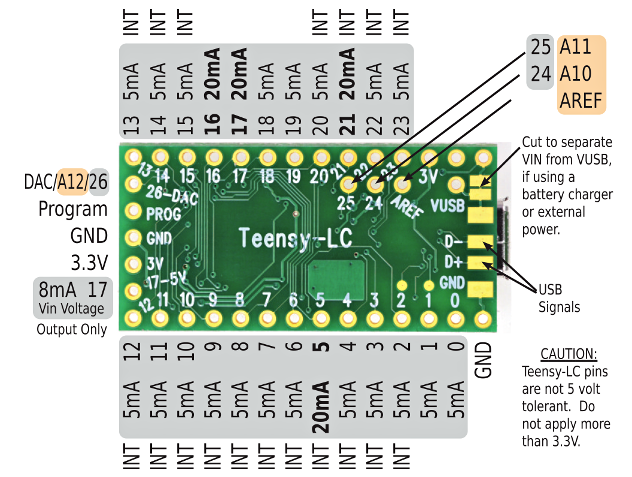
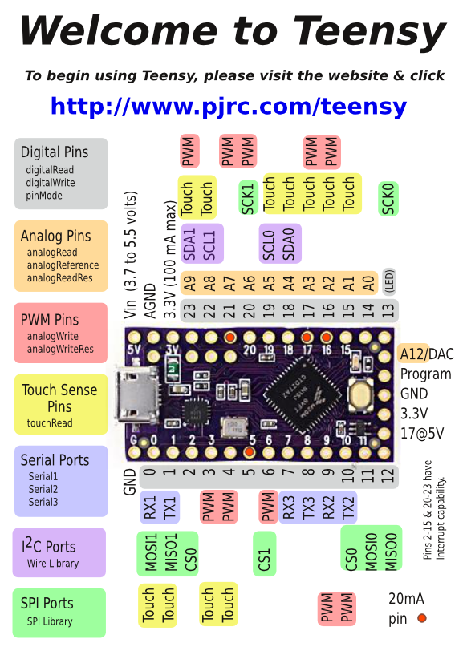
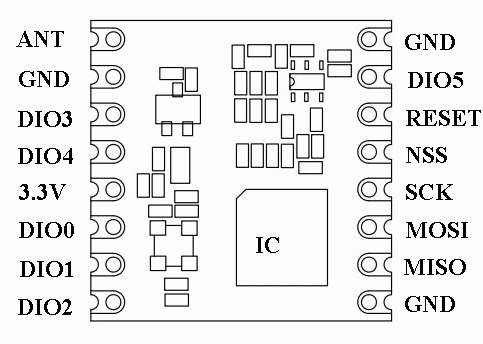

As of TTN version 1.1 (beta) the Over The Air Activation function is more or less the standard to obtain an address. In principle this means that getting your motes to work has become a lot easier. You can make series of motes and use a secret and unique key that is stored in the mote. Upon when the mote is activated over the air, it is assigned a unique address but the key can still be used to read its messages.
The Teensy LC board (LC is for Low-Cost) has the following pin-out (backside of board).

Each Teensy comes with a card which explains its pin-out.

The RFM95 is mounted on a converter board. The converter board is sold on Aliexpress.com for the ESP8266-12 but it works equally well on for the RFM95.

Wiring the RFM95 to the TeensyLC is simple and straightforward, And with the TeensyLC most pins we use are on one side of the board; only pin 13 (CK) and 3.3V need be connetced on the other side.
| TeensyLC | Teensy Pin | RFM95 | Color | Comment |
|---|---|---|---|---|
RX2 |
9 | RESET | -- | |
| VCC | 3.3V | red | ||
| GND | GND | |||
| D2 | 2 | DIO0 | ||
| D5 | 7 | DIO1 | ||
| D6 | 8 | DIO2 | ||
| 3 | -- | DS18B20 data pin (optional) | ||
| TX2 | 10 | NSS | ||
| MOSI0 | 11 | MOSI | ||
| MISO0 | 12 | MISO | ||
| SCK0 | 13 | SCK |